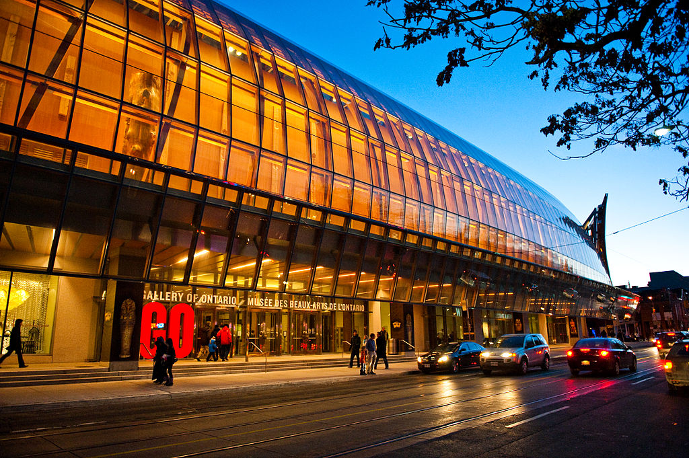

Canada: Art Gallery of Ontario

The Art Gallery of Ontario (AGO; French: Musée des beaux-arts de l'Ontario) is an art museum in Toronto, Ontario, Canada, located in the Grange Park neighbourhood of downtown Toronto, on Dundas Street West]. The building complex takes up 45,000 square metres (480,000 sq ft) of physical space, making it one of the largest art museums in North America and the second-largest art museum in Toronto, after the Royal Ontario Museum. In addition to exhibition spaces, the museum also houses an artist-in-residence office and studio, dining facilities, event spaces, gift shop, library and archives, theatre and lecture hall, research centre, and a workshop.
-
It was established in 1900 as the Art Museum of Toronto and formally incorporated in 1903. The museum was renamed the Art Gallery of Toronto in 1919, before it adopted its present name, the Art Gallery of Ontario, in 1966. The museum acquired the Grange in 1911 and later undertook several expansions to the north and west of the structure. The first series of expansions occurred in 1918, 1924, and 1935, designed by Darling and Pearson. Since 1974, the gallery has undergone four major expansions and renovations. These expansions occurred in 1974 and 1977 by John C. Parkin, and 1993 by Barton Myers and KPMB Architects. From 2004 to 2008, the museum underwent another expansion by Frank Gehry. The museum complex saw further renovations in the 2010s by KPMB and Hariri Pontarini Architects.
-
The museum's permanent collection includes over 120,000 works spanning the first century to the present day.[4] The museum collection includes a number works from Canadian, First Nations, Inuit, African, European, and Oceanic artists. In addition to exhibits for its collection, the museum has organized and hosted a number of travelling art exhibitions.